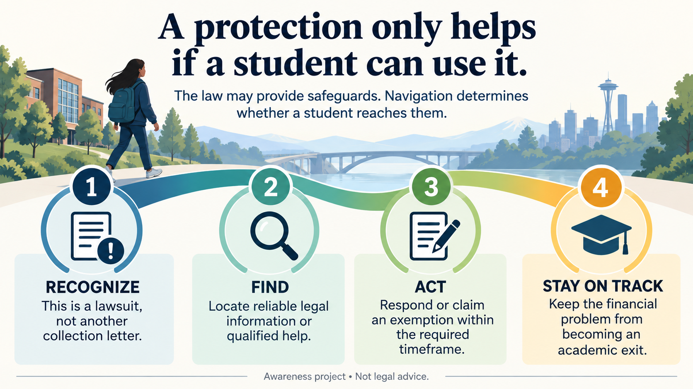

You do not need to become a lawyer to make a useful referral.
The goal is recognition, a warm handoff, and continued retention support—not legal analysis.
A practical triage checklist
Recognize → Find → Act → Stay on track
Recognize: this is a lawsuit or garnishment, not another collection letter.
Find: locate campus legal services, Washington LawHelp, 211, or legal aid.
Act: the student gets qualified help to respond or claim protections within applicable timeframes.
Stay on track: campus support continues working on the non-legal barriers that threaten enrollment.

Do not assume there is a parent to call.
Some students have a parent or other experienced adult who can read a frightening letter, help make a phone call, lend money, find a lawyer, or simply say, “This looks important. Don’t ignore it.” Some do not.
Student-support programs already recognize this reality in financial aid. Federal rules provide a process for students facing abandonment, estrangement, unsafe parental contact, and other unusual circumstances to be considered independent for aid purposes. Current FAFSA rules allow students to identify unusual circumstances and receive provisional independent status while the school reviews the case. Source S24
When a student receives a summons, garnishment notice, or other court document, do not assume an experienced adult is helping them interpret what happens next.
Recognition and a warm referral may be the intervention.